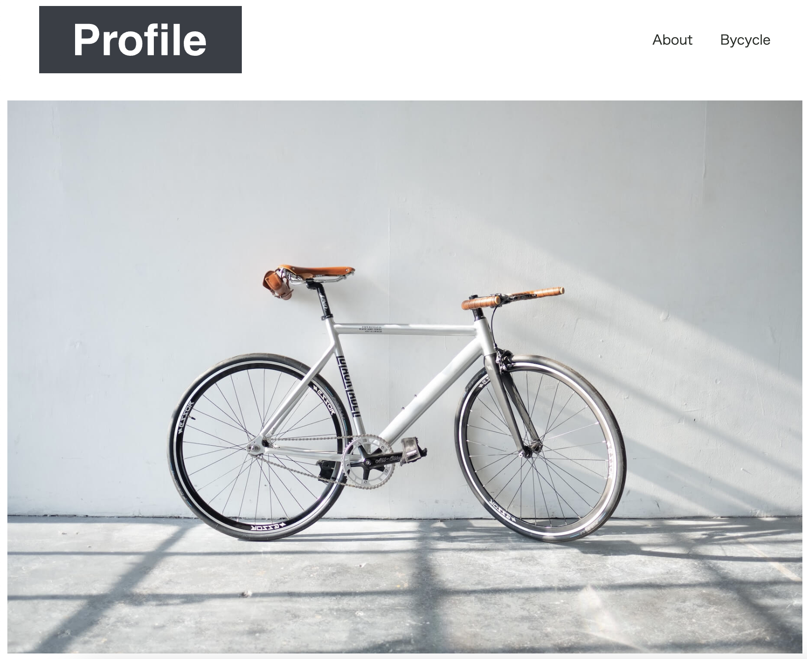
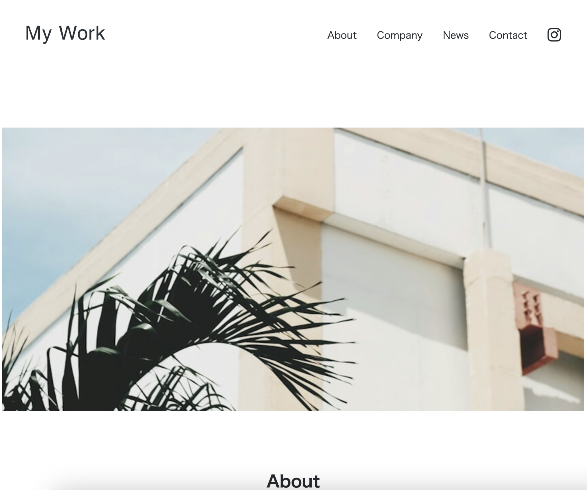
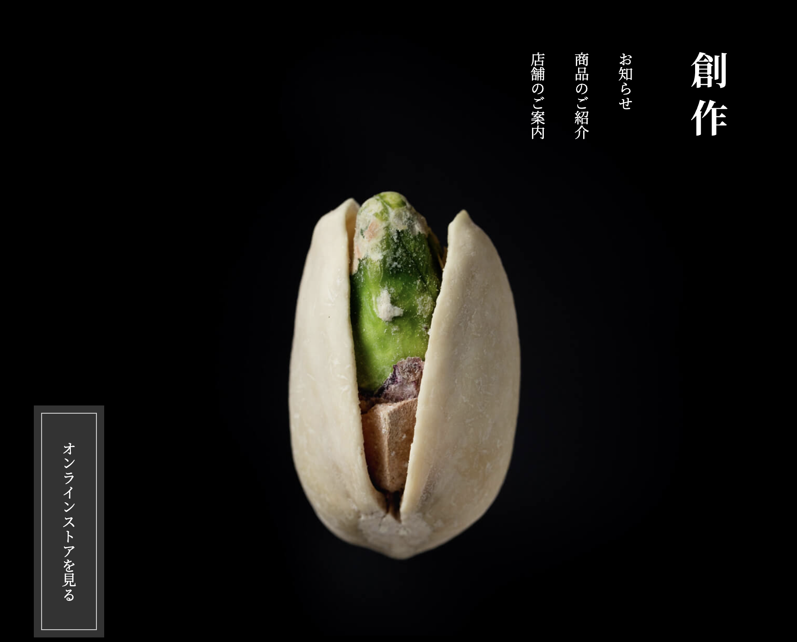

作品一覧

mosha-portfolio-1
このサイトは自己紹介サイトを模写した作品です。
- 制作期間：2日
- 使用技術：HTML / CSS
- ナビゲーションを使って、各項目にスムーズに移動できるよう設計しました。
- 写真にカーソルを合わせた際に、選択されていることが視覚的に分かるようホバー時の演出にこだわりました。

mosha-portfolio-2
このサイトは仕事紹介のサイトを模写した作品です。
- 制作期間：1日
- 使用技術：HTML / CSS
- ニュース欄を設け、伝えたいトピックスを分かりやすくまとめることを意識しました。
- 問い合わせ欄を作成し、フォームから入力・送信できるフォーマットを実装しました。

mosha-portfolio-3
このサイトは和の美をテーマにした架空のショップサイトです。
- 制作期間：2日
- 使用技術：HTML / CSS
- レスポンシブ対応を意識して、スマホでも見やすくなるように設計しました。
- 縦書きの日本語レイアウトに挑戦し、和風の雰囲気を表現しました。
プロフィール
何か自分の強みになるスキルを身につけたいと思い、Web制作の学習を始めました。
もともとパソコン操作が好きで、Webサイトの仕組みに興味を持ち、HTMLやCSSから勉強を始めています。
現在は模写サイトの制作を通して、デザインやコーディングの基礎を学んでいます。
今後はJavaScriptやレスポンシブ対応なども習得し、より実践的なWebサイトを作れるようになることを目指しています。
将来的には、クライアントの思いを形にするwebサイト制作を行えるよう、スキルアップを続けていきたいです。